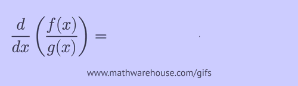
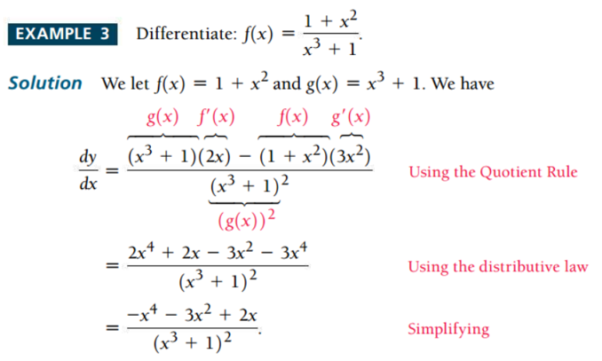
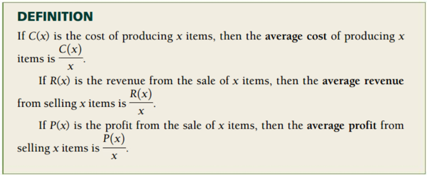
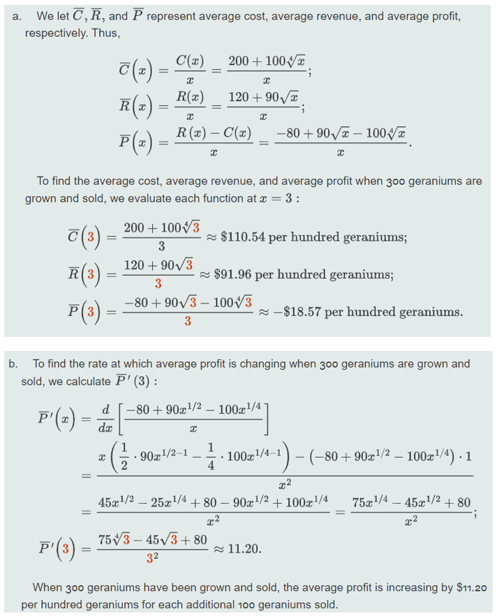

Chapter 6 Quotient Rule
The quotient rule can be used for differentiation when taking the derivative of a function divided by another function. For example, rational functions are this type of question.
Let \(f(x)\) and \(g(x)\) be two differentiable functions. The quotient rule of the derivative is given in the following.
\[ \frac{d}{dx} \left(\frac{f(x)}{g(x)}\right) = \frac{f^\prime(x)g(x) - f(x)g^\prime(x)}{g^2(x)} \]
The following animated graph shows how to manipulate the terms algebraically.

Example 3. Find the derivative of the following functions.
(a). \(W(z) = (3z + 9)/(2 -z)\)
(b). \(h(x) = 4\sqrt{x}/(x^2 - 2)\)
Solution: Using the quotient rule, we have
(a). \(W^\prime(z) = [(3z+9)^\prime(2-z) - (3z+9)(2-z)^\prime]/(2-z)^2\) \[ = \frac{3(2-z)-(3z+9)(-1)}{(2-z)^2} = \frac{15}{(2-z)^2} \]
(b). \(y^\prime = \left[(4\sqrt{x})^\prime (x^2-2) -(4\sqrt{x})(x^2-2)^\prime\right]/(x^2-2)^2\) \[ = \frac{(2/\sqrt{x})(x^2-2)-8x\sqrt{x}}{(x^2-2)^2} = -\frac{6x\sqrt{x}+4/\sqrt{x}}{(x^2-2)^2}. \]
Example 4 (This example is taken from the textbook)

Important Business Functions: Cost, Revenue, and Profit-related functions and applications.

Example 5 (This example is also taken from the textbook)
Paulsen’s Greenhouse finds that the cost, in dollars, of growing x hundred geraniums is modeled by
\[
C(x) = 200 + 100 \sqrt[4]{x}
\]
If revenue from the sale of x hundred geraniums is modeled by
\[
R(x) = 120 + 90\sqrt{x}
\]
find each of the following.
The average cost, average revenue, and average profit when 300 geraniums are grown and sold.
The rate at which the average profit is changing when 300 geraniums are grown and sold.
